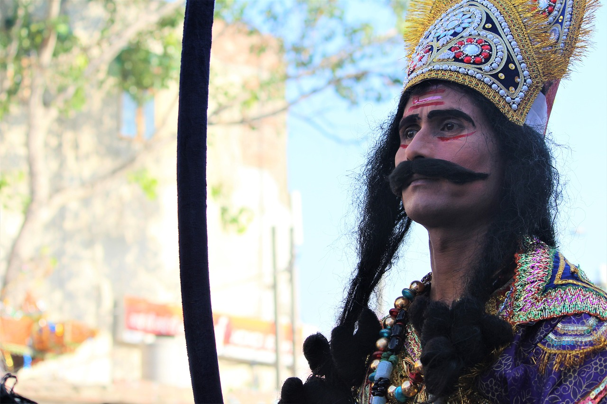

Scelta 2 : Andare in un villaggio non sapendo se ci sono possibili nemici
Nel villaggio trovò un nemico molto accattivante di nome Fabrix (Fabrizio) Schwarzenegger. Fabrix Schwarzenegger propone uno scontro visto che lui era un nemico molto cattivo... molto molto!! Cristian estrae la sua spada e si prepara il duello. Soltanto che Fabrix Schwarzenegger aveva delle armi molto più potenti di una spada e quindi decide di usare soltanto una spada per combattere Cristian combattendo uno contro uno. Fabrizio Schwarzenegger fa vedere la sua superiorità fisica e Christian si trova in difficoltà però sa che se non batte Fabrizio Schwarzenegger non può entrare nel villaggio...
